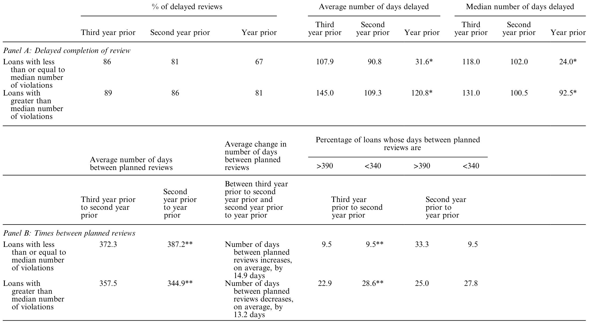
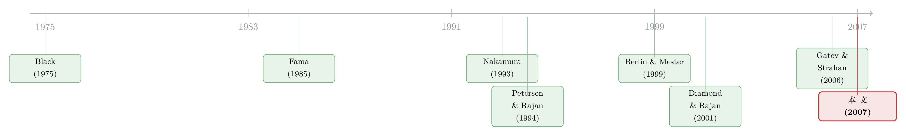

你把账户开在哪家银行，银行就比谁都先知道你要出事
本文读的是 Mester, Nakamura & Renault (2007, Review of Financial Studies)：一家匿名加拿大银行 100 家小企业客户、1200 个「企业-月」的内部数据告诉我们，借款人放在银行的交易账户（transactions account）——也就是日常收付款的支票账户——是银行监控贷款最及时、最难造假的一只「眼睛」。应收账款的月度变动会透明地映在账户流水里；当借款额屡屡超过抵押品时，信用降级和贷款核销随之而来；而银行一旦察觉，就会把贷后审查做得更频、更长。这为「为什么存款和贷款要放在同一家机构里做」这个金融中介理论的老问题，给出了第一份直接的微观证据。
1 一个被反复说、却从没被看见的故事
金融学里有一句几乎人人会背的话：银行是「特殊」的（banks are special）。特殊在哪？Black（1975）和 Fama（1985）给的答案是——银行同时经手客户的支付。客户的每一笔进账、每一笔出账，都从银行的账户里流过。于是银行比任何外部债权人都更早、更全地看见借款人的经营状况。这套说辞写进了无数教科书，也成了「为什么吸收存款和发放贷款要捆在一家机构里」这一中介理论核心命题的支柱。
可问题在于：这句话从没有人真正看见过。
我们看到过关系型借贷（relationship lending）的价值——但那是从贷款利率里间接推出来的（Petersen and Rajan, 1994；Berger and Udell, 1995）；我们看到过宣布获得银行贷款时股价会正向跳一下（Lummer and McConnell, 1989）。但这些都是「结果」。没有人钻进银行内部，去看那条所谓的信息暗管——交易账户——究竟流过了什么、银行又拿它做了什么。
本文做的，就是把这根暗管挖出来，摆到台面上。
（关于「银行的私有信息」这条线，还可参见《借公开债，是为了躲开银行的眼睛》；关于关系本身值多少钱，参见《银行为什么舍得先亏本拉客？》。）
2 这根「暗管」到底怎么运转：一个会计恒等式
要理解全文，先得理解一个再朴素不过的会计恒等式。
这些小企业借的是经营性贷款（operating loan），抵押品是它们的应收账款和存货——所谓「内部抵押品（inside collateral）」。贷款合同把可借额度限定为应收账款和存货的某个百分比，并要求借款人每月上报：发了多少货（新增应收账款）、收回了多少款。
于是每个月，信贷员都能做一次逐笔对账：
妙就妙在 \(C_t\) 这一项。理论上，如果借款人月初、新增、月末三个数都报得准，那 \(C_t\) 是冗余的——可以由恒等式倒算出来。但现实里，借款人永远有少报、晚报、为了多借而虚报的诱惑。而交易账户里的现金回款 \(C_t\) 是银行直接观察到的，不经借款人之手。这就成了一把校验尺：它既能验借款人有没有说谎，也能看出这家企业到底把应收账款管得有多上心——后者本身就是一个极有说服力的信号。
一个细节很能说明问题：如果借款人想偷偷在别家银行另开账户、切断信息流，那么本行账户里应有的存货付款和应收回款会突然消失——这种「此地无银」反而会立刻暴露它的小动作。账户的特殊，恰恰在于它不容易被悄悄绕开。
这也顺带解释了一个对照实验的来源：当借款人和银行是独家关系（exclusive relationship）时，所有现金流都从这一个账户走，\(C_t\) 是干净完整的；而当借款人在别家银行也有账户时，本行看到的流水就残缺了。独家与非独家，于是成了衡量「银行信息质量」的一把天然标尺。
3 数据：一家不愿透露名字的加拿大银行
接着，一个自然的问题是：你从哪儿弄来这种数据？
银行内部的贷后监控记录，向来是中介研究最难触及的「黑箱」。本文的三位作者（其中一位是费城联储、另一位是 Wharton 的 Mester）在保密协议下拿到了一家加拿大银行的内部数据。
- 样本：
100家小企业借款人。「小企业」定义为授信额度在C$500,000到C$10,000,000之间、且股东即经营者。样本里实际平均借款约C$1,500,000。 - 配对设计：其中
50笔在 1988–1992 年间被银行宣布为「问题贷款」（troubled）——这几乎囊括了该行同期所有符合标准的问题贷款；另50笔是保持健康的贷款，按行业、年销售额、贷款规模与问题贷款一一配对。 - 频率：每笔贷款都有年度数据和月度数据，覆盖被宣布问题（或最后一次信用复审）之前三年。合计约
1200个「企业-月」。 - 独家关系：
50笔问题贷款里33笔是独家关系，50笔健康贷款里26笔是独家；全样本59笔独家、41笔非独家。 - 信用评级：银行内部用
1–8的评级尺度，1最好，6–8是三档不同程度的「问题」。
「宣布问题」是件后果极重的事——它是银行正式承认这笔贷款大概率要亏的时点。结局有多惨？50 笔问题贷款里，36 笔（72%）最终走向破产或私下清算。

Table 5: sorts exclusive loans on the number of violations they even-
这里有一个反直觉的细节值得停一下：你可能以为，银行手握独家客户的精准信息，一旦发现苗头不对，就会收紧对它们的放贷。但数据显示恰恰相反——问题贷款的平均规模不降反升。也就是说，银行的信息优势并不直接表现为「赶紧抽贷」，而是表现为更准确的风险识别和更密集的监控。识别和行动，是两回事。
4 三个环环相扣的发现
把全文的实证拆开，是一条逻辑链的三段：
第一段——信息确实在账户里。 月度应收账款的变化，能透明地反映在交易账户余额的变化中；而且这种透明度，在独家关系借款人身上明显更高。换句话说，恒等式里那个 \(C_t\) 真的在替银行说话。
第二段——这信息能预测坏结局。 借款人超过抵押品上限借款（borrowings in excess of collateral）的次数，是信用降级和贷款核销的重要预测变量；而且银行会及时地用上这个信号。一次次「越线」累积起来，就是麻烦将至的红灯。
第三段——银行确实在行动。 随着贷款恶化，银行会加大监控强度：贷后审查变得更频繁、也更冗长。信息→预测→响应，闭环就此合上。
但真正关键的一步在于：这三段合在一起，才第一次把「银行是特殊的」从一句口号，变成了一条可观察、可检验的因果链。Udell（2004）说内部抵押品是「信息密集型」的资产，本文给出了这句话的实证含义——正因为应收账款和存货的变动会实时映在账户里，它们才对放贷人「信息密集」。
5 于是反转出现：特殊，但正在贬值
如果故事到此为止，那不过是给老命题补了块证据。本文更有意思的地方，是它顺手戳了一下这块「特殊」的成色。
银行的这点优势，本质是「把支付信息和放贷捆在一起」省下的成本。可一旦信息处理和通讯的成本持续下降，复制这套服务就越来越便宜——别人也能近似地看到你的账户流水了。Udell（2004）就指出，财务公司（finance company）这类资产型放贷人会要求借款人专门开一个「现金抵押账户（cash collateral account）」，专门用来归集应收账款回款；放贷人监控这个账户的进出，能拿到和商业银行从支票账户里几乎一样的信息——只不过它得多找一家银行来托管账户，成本略高而已。
而这点成本差，正在被通讯革命抹平。于是我们看到：财务公司贷款相对商业银行工商业贷款（C&I）的比例，从 1975 年的约 17% 一路升到 2005 年的约 43%（美联储资金流量表）。银行让出的，正是那块「账户信息」曾经独享的护城河。
这也顺手反驳了几个流行的替代理论。Kashyap, Rajan and Stein（2002）认为存款和授信是可以共享流动性储备的「互补品」——但财务公司不吸收活期存款，照样放贷，解释不了它的崛起；Diamond and Rajan（2001）说吸收活期存款是银行「自我约束去催收」的承诺装置——可财务公司发的是又险又不流动的贷款，也没有活期存款合同。本文的「监控信息」视角，恰恰能容下财务公司的兴起：它们也能开账户、也能监控，只是贵一点点而已。至于 Gatev and Strahan（2006）发现银行能对冲商业票据市场的流动性风险，本文则给了一个微观理由——正因为账户带来的监控优势，银行最善于及时察觉风险变化。
6 文献脉络
把这条线捋一遍，就能看清本文站在哪。
最上游是两篇奠基之作：Black（1975）和 Fama（1985），它们立起了「银行特殊在它经手支付」这面大旗，但只是论断，没有微观证据。中游分出两支实证：一支用贷款利率间接度量关系型借贷的价值（Petersen and Rajan, 1994；Berger and Udell, 1995；Berlin and Mester, 1998），另一支用股价反应捕捉银行贷款的信息含量（Lummer and McConnell, 1989；Billet, Flannery and Garfinkel, 1995；Preece and Mullineaux, 1996）。Berlin and Mester（1999）进一步把银行的负债结构和它独特的放贷行为连了起来。而本文作者之一 Nakamura（1993a,b）早就在理论上提出：支票账户信息对独家客户而言更透明、更完整。

本文（2007）正是把 Nakamura 当年的猜想落了地——它不再绕道利率或股价，而是直接钻进账户，第一次正面检验了交易账户信息在监控企业借款人中的作用。这是它在这条脉络里独一无二的位置。
评论与延伸（Q&A + 研究方向）
(a) 几个可能的疑问
Q：只有一家匿名银行、100 个借款人，结论能推广吗？
这是最该警惕的外部效度问题。作者的辩护是：交易账户里的现金流不受银行控制（尤其对健康借款人而言），所以这些流水的信息特性，应当能代表一般小企业抵押贷款的监控逻辑，而非这家银行的特例。但样本毕竟小、年代久（1988–1992）、且来自加拿大，把量级外推到今天、外推到别的制度环境，仍需谨慎。
Q：加拿大的银行账户体系和美国一样吗？
不完全一样，而且这个差别恰好对作者有利。英式（加拿大用）会计体系把支票账户和经营性贷款账户合并成一个；美式则是两个独立账户，因而能多看到一层「贷款提款」的信号。所以用加拿大数据得到的，应是美式体系下可得信息的下界——美国银行只会看得更多，不会更少。
Q：「问题贷款规模不降反升」，是不是说明银行的监控根本没用？
不能这么读。识别风险和减少敞口是两件事。银行可能出于关系维系、清算时点、或博一把翻盘的考量而维持甚至追加敞口；本文证明的是银行看见了风险并据此加大监控，而不是它会立刻抽贷。把「没抽贷」当成「没看见」，是混淆了信息与行动。
Q：独家 vs 非独家的对比，会不会是选择效应？
有这个隐忧。选择独家关系的企业，本身可能就更小、更不透明、更依赖单一银行。作者部分地缓解了它：非独家又可细分为「经营贷在本行、定期贷在他行」和「经营贷在他行」两类，后者本行往往连月度账户数据都没有（14 笔里有 10 笔缺失），基本被排除在检验之外。所以真正的对比，主要发生在「独家客户」与「经营贷在本行但有他行定期贷」之间——这削弱了但未必完全消除选择问题。
Q：这篇 2007 年的论文，在网银和开放银行时代还成立吗？
它的核心命题反而被时代验证了——而且是以「自我证伪」的方式。本文已经预言：通讯成本下降会侵蚀银行的账户信息优势，财务公司份额会上升。今天的开放银行（open banking）和账户聚合，正是把这种侵蚀推到了极致：任何放贷人都能经客户授权看到账户流水。银行那只「比谁都先知道」的眼睛，正越来越不再独家。
Q：为什么强调「内部抵押品」而不是房产之类的「外部抵押品」？
因为只有内部抵押品（应收账款、存货）的价值变动，才会实时地映在交易账户的现金流里——它是「信息密集」的。房产这类外部抵押品虽然清偿时好用，却不向放贷人持续吐露经营信息。这解释了为什么交易型放贷人偏爱内部抵押品：要的不只是清偿保障，更是那条监控暗管。
(b) 几个可能的研究问题与提案
1. 开放银行如何重新分配「监控租金」？
【经济故事】本文说银行的账户优势会随通讯成本下降而贬值。开放银行把这件事制度化了：客户可授权第三方读取账户数据。那么银行原本独享的监控租金，是被金融科技放贷人夺走，还是因信息更易得而整体消散？这直接延续本文的核心命题。
【可行性】中。需要某国开放银行落地的时间错位（staggered rollout）作为冲击，配合银行与金融科技放贷人的贷款定价、违约数据，用双重差分（difference-in-differences, DiD）识别。难点是数据获取和「谁授权了数据」的内生性。
2. 交易账户信号能否前置预测债券市场的信用事件？
【经济故事】本文证明账户里的「越线借款」次数能预测降级与核销。若把视角搬到有公开债的中型企业，银行端的账户监控信号，是否领先于评级机构和债券利差对信用恶化的反应？这关系到公司债流动性与信息效率的源头。
【可行性】低到中。瓶颈在于把银行内部账户数据与债券二级市场（如 TRACE）对接起来——两套数据分属不同机构、企业身份难以匹配。除非有监管端的合并数据，否则识别困难。
3. 当借款人「分散」银行关系，信息损失的代价有多大？
【经济故事】本文用独家/非独家做对比，但没有量化「多开一家银行账户」给放贷人带来的信息损失、以及借款人为此付出的利率溢价。把信息残缺直接定价，是对关系型借贷文献的自然延伸。
【可行性】中。需要能观察到企业全部银行关系的信贷登记（credit registry，如多国央行的 credit register），结合贷款利率，估计「关系数量」对利差的边际效应，并用企业固定效应控制异质性。
4. 外资放贷人在账户监控上是否天然吃亏？
【经济故事】顺着本文「谁能看见账户谁就有优势」的逻辑：外资银行通常不经手本地借款人的日常支付，账户监控的暗管对它们是断的。这是否能解释外资在中小企业信贷上的退缩、以及它们偏好大企业和硬信息的倾向？
【可行性】中。可用某国外资银行准入放开作为冲击，比较外资与本地银行在「需要软信息/账户监控」的小企业 vs「靠硬信息」的大企业上的放贷份额变化，DiD 识别。
参考文献
- Berger, A. N., and G. F. Udell (1995). Relationship Lending and Lines of Credit in Small Firm Finance. Journal of Business 68, 351–381.
- Berlin, M., and L. J. Mester (1998). On the Profitability and Cost of Relationship Lending. Journal of Banking and Finance 22, 873–897.
- Berlin, M., and L. J. Mester (1999). Deposits and Relationship Lending. Review of Financial Studies 12, 579–607.
- Black, F. (1975). Bank Funds Management in an Efficient Market. Journal of Financial Economics 2, 323–339.
- Carey, M., M. Post, and S. A. Sharpe (1998). Does Corporate Lending by Banks and Finance Companies Differ? Evidence on Specialization in Private Debt Contracting. Journal of Finance 53, 845–878.
- Diamond, D., and R. Rajan (2001). Liquidity Risk, Liquidity Creation and Financial Fragility: A Theory of Banking. Journal of Political Economy 109, 287–327.
- Fama, E. F. (1985). What's Different About Banks? Journal of Monetary Economics 15, 29–40.
- Gatev, E., and P. E. Strahan (2006). Banks' Advantage in Hedging Liquidity Risk: Theory and Evidence from the Commercial Paper Market. Journal of Finance 61, 867–892.
- Kashyap, A. K., R. Rajan, and J. C. Stein (2002). Banks as Liquidity Providers: An Explanation for the Coexistence of Lending and Deposit-Taking. Journal of Finance 57, 33–73.
- Lummer, S. L., and J. J. McConnell (1989). Further Evidence on the Bank Lending Process and the Capital Market Response to Bank Loan Announcements. Journal of Financial Economics 25, 99–122.
- Mester, L. J., L. I. Nakamura, and M. Renault (2007). Transactions Accounts and Loan Monitoring. Review of Financial Studies 20(3), 529–556.
- Myers, S. C., and N. S. Majluf (1984). Corporate Financing and Investment Decisions When Firms Have Information That Investors Do Not Have. Journal of Financial Economics 13, 187–221.
- Petersen, M. A., and R. G. Rajan (1994). The Benefits of Lending Relationships: Evidence from Small Business Data. Journal of Finance 49, 3–37.
- Preece, D., and D. J. Mullineaux (1996). Monitoring, Loan Renegotiability, and Firm Value: The Role of Lending Syndicates. Journal of Banking and Finance 20, 577–594.
- Udell, G. F. (2004). Asset-Based Finance. Commercial Finance Association, New York, NY.